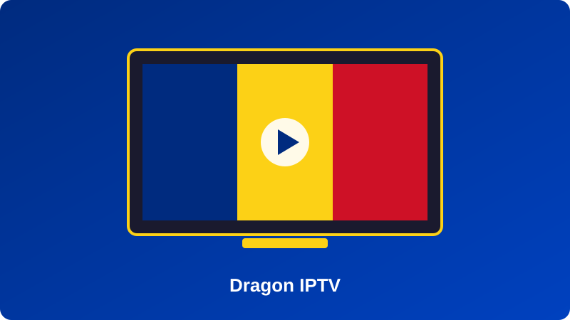
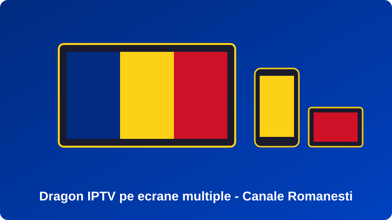

Daca ai cautat dragon iptv, probabil vrei sa afli rapid despre ce este vorba: o aplicatie, o lista de canale sau un serviciu complet de televiziune prin internet. Raspunsul nu este mereu clar, pentru ca numele Dragon este folosit in mai multe locuri, iar rezultatele din cautari amesteca playere, liste si oferte de abonament. Rezultatul? Multi utilizatori instaleaza ceva, raman cu un ecran gol si pierd timp fara sa stie de ce.
In acest ghid pui lucrurile in ordine. Vezi ce inseamna dragon iptv in practica, cum functioneaza un serviciu IPTV, cum configurezi un player pe televizor, telefon sau box, ce canale romanesti ar trebui sa primesti si ce greseli sa eviti. Informatiile sunt scrise pentru publicul din Romania si din diaspora, cu exemple concrete si pasi usor de urmat.
Echipa Romania IPTV ajuta zilnic familii din tara si din strainatate sa isi porneasca televiziunea romaneasca fara batai de cap. La final vezi cum primesti un test gratuit pe WhatsApp, inainte sa platesti orice.

Cuprins
- Ce inseamna dragon iptv si ce cauta de fapt oamenii
- Cum functioneaza un serviciu IPTV: pe scurt
- Dragon iptv pe Android, Smart TV, Firestick si iPhone
- Configurare pas cu pas dupa ce gasesti aplicatia
- Canale romanesti: ce ar trebui sa primesti
- Riscuri si greseli frecvente cand cauti dragon iptv
- Probleme dupa instalare si solutii rapide
- Dragon iptv pentru diaspora romaneasca
- Cum alegi serviciul potrivit
- Intrebari frecvente
- Concluzie
Ce inseamna dragon iptv si ce cauta de fapt oamenii
Un nume, mai multe intelesuri
Expresia dragon iptv apare in cautari pentru ca mai multe aplicatii, liste si servicii folosesc numele Dragon. Unii utilizatori vor un player instalabil pe Android, altii o lista de canale, iar altii cauta un abonament complet. Inainte sa instalezi ceva, clarifica ce anume vrei: aplicatia care reda imaginea sau serviciul care ofera canalele. Sunt doua lucruri diferite, iar confuzia dintre ele cauzeaza majoritatea problemelor.
Player versus furnizor
Un player este programul de pe televizor sau telefon. Furnizorul este firma care iti da accesul la canale prin link M3U, cod Xtream sau portal. Cand cauti dragon iptv, verifica daca pagina vorbeste despre aplicatie sau despre serviciu. Pentru o explicatie similara a descarcarii unui player, citeste si ghidul download iptv.
De ce conteaza numele
Numele unui produs nu garanteaza calitatea. Doua servicii pot purta nume apropiate si pot avea stabilitate complet diferita. Judeca dupa ce primesti: lista de canale, numarul de ecrane, suportul in limba romana si perioada de test, nu dupa cat de cunoscut suna un brand.
In practica, cel mai sigur mod de a evita confuzia este sa pornesti de la nevoia ta. Cand analizezi dragon iptv, intreaba-te: vrei sa vezi canale romanesti pe televizor, pe telefon sau pe ambele? Cate persoane din casa se uita in acelasi timp? Raspunsurile te ajuta sa alegi o aplicatie potrivita si un abonament care nu te lasa fara imagine exact cand incepe filmul sau meciul preferat.
Cum functioneaza un serviciu IPTV: pe scurt
Fluxul video prin internet
Televiziunea prin IPTV ajunge la tine prin internet, nu prin antena sau cablu. Canalele sunt transmise ca flux video, iar playerul le afiseaza. Daca o cautare precum dragon iptv te duce spre un serviciu, acesta trebuie sa aiba servere puternice si o infrastructura care suporta seara, cand se uita cei mai multi oameni.
Formate de acces: M3U, Xtream, portal
Furnizorii folosesc trei metode: un link M3U cu lista canalelor, datele Xtream Codes (server, utilizator, parola) sau un portal. Majoritatea aplicatiilor moderne accepta primele doua. Daca primesti oricare dintre ele, le introduci o singura data in player si lista se incarca automat.
Ghidul de program (EPG)
EPG-ul este programul TV afisat in aplicatie. Fara el vezi doar nume de canale, fara emisiuni. Un serviciu bun trimite EPG pentru canalele romanesti, ca sa stii ce rulea pe Pro TV, Antena 1 sau Kanal D chiar acum.
Pe scurt, un serviciu bun combina trei lucruri: servere rapide, o lista actualizata si un ghid de program corect. Cand una dintre ele lipseste, apar blocaje, canale mutate sau emisiuni afisate gresit. Din acest motiv, testul de cateva zile ramane cea mai buna metoda de verificare inainte de orice plata.
Dragon iptv pe Android, Smart TV, Firestick si iPhone
Telefon si tableta Android
Pe Android deschizi Google Play, cauti playerul dorit si il instalezi. Evita fisierele APK primite pe mesaje sau de pe site-uri cu reclame, deoarece pot contine programe nedorite. Daca apare o aplicatie cu numele Dragon, citeste recenziile si verifica dezvoltatorul inainte de instalare.
Smart TV, Android box si Firestick
Pe un televizor cu Android TV instalezi aplicatia direct din magazin. Pe un TV vechi, conecteaza un Android TV box sau un Firestick la portul HDMI. Costul este mic, iar rezultatul este o interfata rapida, cu telecomanda si cautare. Amazon si Google ofera magazine oficiale pentru ambele.
iPhone, iPad si Apple TV
Pe dispozitivele Apple instalezi playere din App Store, iar procesul este similar: adaugi linkul sau datele Xtream primite de la furnizor. Daca iti place sa compari variante, vezi si articolul despre digital iptv.
Indiferent de aparat, regula ramane aceeasi: instalezi doar din surse oficiale, tii sistemul actualizat si nu folosesti permisiuni inutile. Daca ai mai multe dispozitive in casa, foloseste acelasi cont pe fiecare, in limita numarului de ecrane inclus in abonament.
Configurare pas cu pas dupa ce gasesti aplicatia
Pasii de baza
Pasii sunt aceiasi pe aproape orice aparat: instalezi playerul, deschizi meniul de adaugare a listei, alegi metoda (M3U sau Xtream), introduci datele si astepti incarcarea. Prima incarcare dureaza de la cateva secunde la cateva minute, in functie de dimensiunea listei.
Verificarea dupa incarcare
Dupa ce adaugi datele, deschide cateva canale in ore diferite: dimineata, dupa-amiaza si seara. Un test serios nu se face doar la ora 14:00, ci si la 20:00, cand traficul este maxim. Asa afli daca serviciul rezista cand conteaza.
Setari utile
Activeaza decodarea hardware, alege tipul potrivit de buffer si seteaza rezolutia automata. Daca ai imagine blocata, mareste bufferul cu cateva secunde. Aceste setari rezolva multe probleme fara sa schimbi furnizorul.
Daca dupa configurarea dragon iptv ceva nu merge, nu schimba imediat aplicatia. Mai intai verifica datele introduse, ora si data aparatului si conexiunea la internet. In multe cazuri, o simpla repornire a routerului si o reincarcare a listei rezolva problema in cateva minute.
Canale romanesti: ce ar trebui sa primesti
Generaliste si stiri
Pentru publicul din Romania si diaspora, baza este simpla: Pro TV, Antena 1, Kanal D, Prima TV, Digi 24, Antena 3 CNN, Romania TV si TVR. Daca un serviciu legat de dragon iptv nu le include sau le arata intermitent, nu merita sa platesti pentru el.
Sport, filme si copii
Familiile cauta si canale de sport, filme, documentare si desene animate in limba romana. Verifica lista inainte de abonare si cere o demonstratie. Un test gratuit te ajuta sa vezi daca meciurile si programele pentru copii ruleaza fluent.
Muzica si canale regionale
Multi romani din strainatate vor Etno TV, Taraf TV, Favorit TV si alte canale de muzica populara. Merita sa le cauti separat in lista, pentru ca nu toti furnizorii le includ. Detalii despre oferta noastra gasesti si in iptv romania.
Un detaliu important pentru familii este calitatea imaginii la canalele mari. Cere un test la ore de varf si compara cateva emisiuni populare: stiri, seriale si sport. Daca imaginea ramane clara si sunetul este sincron, lista este bine intretinuta si merita luata in calcul.

Riscuri si greseli frecvente cand cauti dragon iptv
Liste gratuite si linkuri suspecte
Listele "gratuite" circula pe grupuri si pe site-uri cu reclame agresive. Multe functioneaza cateva zile si apoi dispar, iar unele cer date personale sau instalarea unor programe. Daca ceva pare prea frumos ca sa fie adevarat, probabil nu este stabil.
Platile fara dovada
Nu plati niciodata inainte sa vezi un test. Un furnizor serios iti ofera acces de proba, iti spune clar pretul si perioada, si raspunde la mesaje. Evita serviciile care cer plata doar prin metode netraceabile.
Ignorarea conexiunii la internet
Aplicatia nu poate compensa un internet slab. Ai nevoie de aproximativ 10 Mbps pentru HD si 25 Mbps pentru 4K pe ecran. Foloseste cablu de retea pe televizor, daca se poate, sau o retea Wi-Fi de 5 GHz.
O regula simpla te ajuta: daca nu poti vorbi cu un om real inainte de plata, mergi mai departe. Furnizorii seriosi raspund rapid, explica ce oferta ai si nu te grabesc. Presiunea de tip "doar azi" este, de obicei, un semnal de alarma pentru orice cumparator atent.
Probleme dupa instalare si solutii rapide
Ecran negru sau canale lipsa
Daca lista este goala, verifica daca linkul a fost copiat complet, fara spatii. Reporneste aplicatia si actualizeaza lista. Daca problema persista, contacteaza furnizorul, deoarece contul poate fi expirat sau blocat.
Imagine care se blocheaza
Blocajele apar de obicei din cauza internetului sau a unui buffer prea mic. Testeaza viteza reala, inchide alte descarcari si mareste bufferul. Daca doar un canal are probleme, este posibil ca sursa respectiva sa fie temporar indisponibila.
Sunet si imagine nesincronizate
Schimba decodorul din setari (hardware sau software) si reporneste canalul. Pe unele televizoare, o actualizare de sistem rezolva diferentele. Daca persista, incearca alt player; compara cu ghidul despre download ultimate iptv.
Tine o lista scurta cu pasii pe care i-ai incercat: repornire, reincarcare lista, test de viteza, schimbare de decodor. Cand scrii suportului, aceste informatii accelereaza mult rezolvarea, pentru ca echipa nu mai trebuie sa te intrebe de la zero ce s-a intamplat.
Dragon iptv pentru diaspora romaneasca
Canale din tara, oriunde te afli
Romanii din Italia, Spania, Germania, Belgia sau Marea Britanie vor sa vada aceleasi emisiuni ca acasa. Un serviciu IPTV functioneaza oriunde exista internet, deci distanta nu mai conteaza. Important este ca furnizorul sa aiba servere stabile si pentru Europa de Vest.
Suport in limba romana
Cand apare o problema, ajuta enorm sa vorbesti in limba ta. Echipa Romania IPTV raspunde in romana pe WhatsApp, inclusiv seara si in weekend, tocmai pentru familiile care lucreaza peste program.
Comparatii cu alte comunitati
Alte comunitati au propriile servicii, cum este greek iptv pentru publicul grec sau tilaa iptv pentru utilizatorii din zona nordica. Ideea este aceeasi: canale in limba ta, pe orice ecran.
Pentru familiile plecate, televiziunea romaneasca este si o legatura cu casa. Stirile, emisiunile de weekend si muzica populara conteaza mult, iar un serviciu stabil face diferenta intre o seara placuta si una plina de frustrari. De aceea merita investitia intr-o solutie testata.
Cum alegi serviciul potrivit
Criterii care conteaza
Compara numarul de canale romanesti, stabilitatea in orele de varf, numarul de ecrane, calitatea EPG, suportul si politica de test. Pretul conteaza, dar un abonament ieftin cu intreruperi te costa mai mult in nervi decat unul corect.
Intrebari de pus inainte de plata
Intreaba: pot primi un test gratuit? Pe cate dispozitive merge contul? Ce se intampla daca apare o problema? Cat dureaza raspunsul? Raspunsurile clare sunt semnul unui furnizor serios.
De ce Romania IPTV
Pentru Romania IPTV prioritatea este audienta romanofona: lista curata de canale romanesti, suport in limba romana si test gratuit pe WhatsApp. Daca vrei sa compari, cere testul si judeca singur.
La final, in cazul dragon iptv ca si in alte situatii, decizia ta ar trebui sa fie simpla: ai testat serviciul, ai vazut canalele dorite, ai primit raspunsuri clare si pretul este corect. Daca toate aceste conditii sunt indeplinite, poti activa abonamentul fara emotii si te bucuri de televiziune romaneasca oriunde.
Intrebari frecvente despre dragon iptv
Ce este dragon iptv?
Este o expresie cautata pentru aplicatii, liste sau servicii de televiziune prin internet cu numele Dragon. Un player doar afiseaza canalele; acestea vin de la un furnizor, prin link M3U, cod Xtream sau portal.
Este legal dragon iptv?
Un player este legal. Legalitatea depinde de continutul adaugat: alege furnizori care au drepturi de difuzare sau acorduri valide si evita listele de provenienta necunoscuta.
Este dragon iptv gratuit?
Playerele pot fi gratuite, dar canalele stabile implica de obicei un abonament. Listele gratuite sunt instabile si pot fi nesigure.
Pot folosi dragon iptv pe Smart TV?
Da, daca aplicatia exista in magazinul televizorului. In caz contrar, conecteaza un Android TV box sau un Firestick la portul HDMI.
De ce nu vad canale dupa instalare?
Playerul este gol pana adaugi datele furnizorului. Introdu linkul M3U sau codul Xtream, verifica sa nu existe spatii si reincarca lista.
Ce viteza de internet imi trebuie?
Aproximativ 10 Mbps pentru HD si 25 Mbps pentru 4K per ecran. La mai multe ecrane simultan, aduna cerintele.
Pot vedea canale romanesti in strainatate?
Da. Serviciul functioneaza oriunde ai internet, deci diaspora vede aceleasi canale ca in Romania.
Cum primesc un test gratuit?
Scrie-ne pe WhatsApp si primesti acces de test, fara card si fara contract. Echipa raspunde in limba romana.
Testeaza gratuit canalele romanesti
Scrie-ne pe WhatsApp si primesti acces de test, fara card si fara contract.
Cere testul pe WhatsAppConcluzie
Pe scurt, dragon iptv este un nume care poate desemna un player sau un serviciu, iar diferenta conteaza. Alege aplicatii din magazine oficiale, testeaza orice serviciu seara si cere suport in limba romana. Un furnizor bun iti da canale stabile, EPG si raspuns rapid.
Daca vrei canale romanesti fara batai de cap, scrie-ne pe WhatsApp si porneste-ti televizorul cu Romania IPTV.